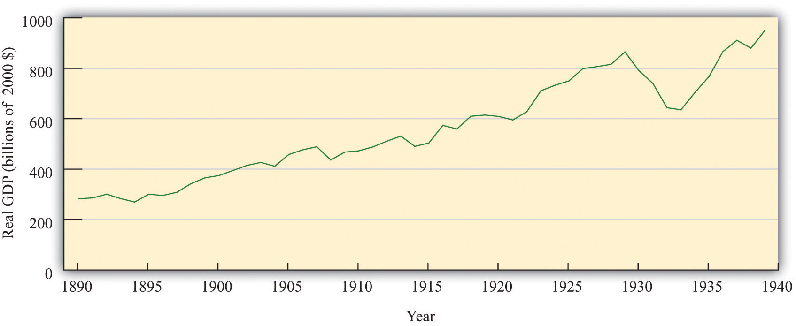
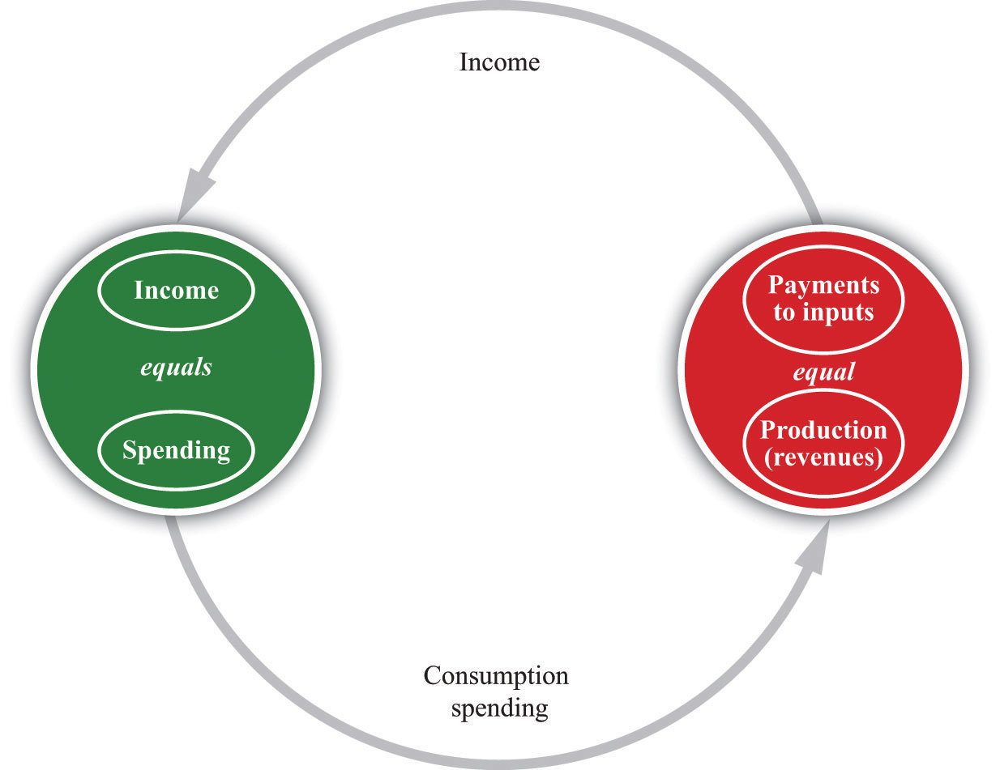

Newspaper headlines around the world in 2008 asked whether the world’s economies were heading for another “Great Depression.” Long-past economic history suddenly captured the attention of economists, journalists, and others. But what was this event and why—even though it occurred the best part of a century ago—does it still hold such a prominent place in our economic memories?
In the early 1930s, instead of benefiting from economic growth and improved standards of living, people witnessed a huge decline in the level of economic activity. There was great economic hardship: large numbers of families struggled to obtain even basic food and shelter. Some sense of the desperation during these times can be found in oral histories. Here, for example, is one person’s story of what it was like trying to find a job:
I’d get up at five in the morning and head for the waterfront. Outside the Spreckles Sugar Refinery, outside the gates, there would be a thousand men. You know dang well there’s only three or four jobs. The guy would come out with two little Pinkerton cops: ‘I need two guys for the bull gang. Two guys to go into the hole.’ A thousand men would fight like a pack of Alaskan dogs to get through there. Only four of us would get through. I was too young a punk.See Studs Terkel, Hard Times: An Oral History of the Great Depression (New York: Pantheon Books, 1970), 30.
The personal suffering is less apparent in the figure below, but this picture does reveal the extraordinary nature of those times. It shows real gross domestic product (real GDP) in the United States from 1890 to 1939. Three things stand out. First, the level of economic activity grew substantially during this half century. This is normal: economies typically grow over the long haul, becoming more productive and producing more output. Second, although the level of US economic activity grew substantially over this half century, there were many ups and downs in the economy during the late 19th century and early 20th century. Third—and most important for our purposes—the period from 1929 to 1937 stands out from the rest. This was not a minor blip in economic activity; the US economy suffered a collapse that persisted for many years. At the same time, unemployment climbed to a staggering 25 percent in 1933—one out of four people was unemployed—compared to a rate of only 3.2 percent in 1929.
Figure 22.1 US Real GDP, 1890–1939
Real GDP increased considerably between 1890 and 1939, but the Great Depression of the early 1930s is a striking exception.
Source: Data from “What Was the U.S. GDP Then?,” Measuring Worth, accessed August 22, 2011, http://www.measuringworth.org/datasets/usgdp/result.php.
The United States was not the only country to experience such hard economic times in this period. Many other countries, such as the United Kingdom, Canada, France, Germany, and Italy also saw their economic progress reversed for a period of years. The Great Depression, as this economic cataclysm came to be called, was a shock to the economists of the day. Prior to that time, most economists thought that, though economies might grow fast in some years and decline slightly in others, prolonged unemployment and underutilization of resources was impossible. The Great Depression proved this view to be erroneous and eventually led to a fundamental change in the way in which economists thought about the aggregate economy. The idea that the economy was naturally stable was replaced with a view that severe economic downturns could recur at any time.
Along with this change in thinking about the economy came a change in attitudes toward macroeconomic policy: economists began to believe that the government could play an active role to help stabilize the economy, perhaps by increasing government spending in bad times. Prior to the Great Depression, nobody even thought that the government should try to keep the economy stable. Both Democrats and Republicans in the 1932 election advocated less government spending because government revenues had fallen. Yet, by the end of the 1930s, the United States and other countries had adopted the view that active policy measures were useful or even essential for the proper functioning of economies.
Three-fourths of a century later, these events are part of economic history. Few people still alive experienced those terrible years directly, yet the time remains part of our collective memory. Above all, we need to know what went wrong if we hope to ensure that such punishing times do not come again. Indeed, the world economy recently suffered the most severe recession since the 1930s, and it is unclear at the time of this writing how long or how bad the current crisis will be. The insights of the economists who explained the Great Depression are still at the heart of today’s discussions of economic policy. Understanding what happened to the economy in the 1930s is more than an exercise in economic history; it is essential for understanding modern macroeconomics. We want to know—
What caused the Great Depression?
We begin by looking at some facts about the Great Depression and the boom that preceded it. Our goal is to see if we can develop a good explanation of these facts. The most fundamental defining feature of the Great Depression was the large and sustained decrease in real GDP. In the figure below, which shows the circular flow of income, reminds us that real GDP measures both production and spending.
Figure 22.2 The Circular Flow of Income
GDP measures the production of an economy and total income in an economy. We can use the terms production, income, spending, and GDP interchangeably.
It follows that during the Great Depression, both output and spending decreased. Perhaps it is the case that production in the economy declined for some reason, and spending decreased as a consequence. Or perhaps spending declined for some reason, and production decreased as a consequence. We examine two approaches to the Great Depression, based on these ideas. One sees the root cause of the Great Depression as a decline in the productive capabilities of the economy, meaning that firms—for some reason—were unable to produce as much as they had before. This then led to decreased spending. The other approach sees the root cause of the Great Depression as a decline in spending, meaning that households and firms—for some reason—decided that they wanted to purchase fewer goods and services. This then led to decreased production.
We look at each explanation in turn. We investigate which inputs contributed the most to the decrease in output and also look at what happened to the different components of spending. This more careful look at the data helps us to evaluate the two competing theories of the Great Depression. We conclude by examining the implications for economic policy and considering what policies were actually conducted at the time of the Great Depression.